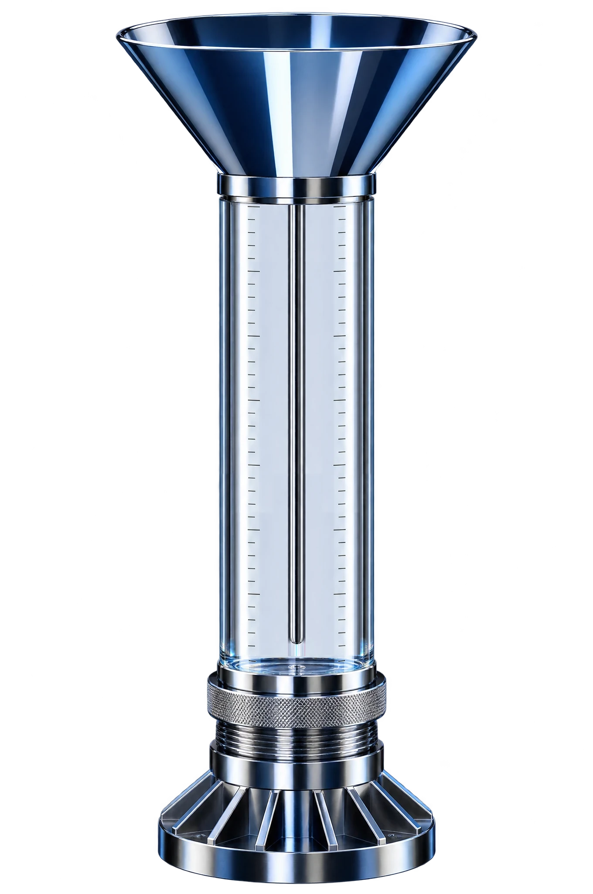

Vous savez trois jours à l’avance ce que la météo va bloquer.
Auvent surveille la météo de vos chantiers et vous propose un autre planning avant les intempéries.
Mercredi, la coule de la dalle attendra jeudi.
À 6 h, vos chefs de chantier savent quoi faire.
Chaque nuit, Auvent compare la météo à votre planning. Chaque chef de chantier reçoit sa consigne sur son téléphone, et vous voyez sa réponse.
Pluie prévue mercredi à Nantes
Limite du coulage
mardi 13 octobre
Les Bateliers, Nantes
Pas de coulage mercredi : il pleut à partir de 9 h. Mercredi, on monte les cloisons du RDC. On coule jeudi à 7 h.
Les Bateliers, Nantes
Pluie possible mercredi matin. On vous confirme le coulage demain à 6 h.
Votre planning change avant la pluie.
Mercredi, la pluie et le vent passent sur cinq chantiers de l’Ouest. Rien ne bouge sans votre accord.
-
Trois tâches sont menacées. Vous prévenez la centrale à béton sans rien annuler.
-
Quatre tâches sont bloquées mercredi.
-
Chaque tâche bloquée passe au premier jour possible. Une tâche que la météo ne gêne pas prend sa place.
-
Vous validez d’un clic. Chaque chef de chantier reçoit son planning, et vous voyez qui l’a lu.
C’est vous qui fixez les limites.
Auvent part des valeurs habituelles du métier. Vous les ajustez à votre matériel.
Limite habituelle : 45 km/h
49 € HT par chantier et par mois
- Tous vos chefs de chantier sont inclus.
- Un chantier terminé ne se paie plus.
- Le premier mois est offert, sans carte bancaire.
Questions fréquentes
Qui décide d’arrêter un chantier ?
Vous. Auvent vous prévient et vous propose un autre planning, puis attend votre accord.
D’où vient la météo ?
De Météo-France. Auvent la met à jour pour chaque chantier plusieurs fois par jour.
Et pour déclarer le chômage intempéries ?
Auvent garde la météo heure par heure de chaque jour d’arrêt. Vous la joignez à votre déclaration.